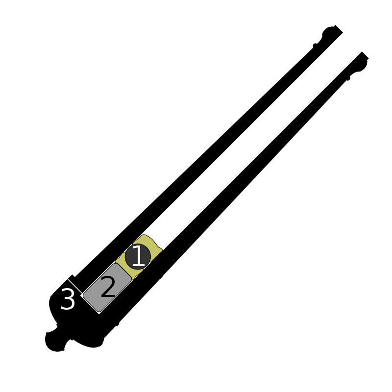
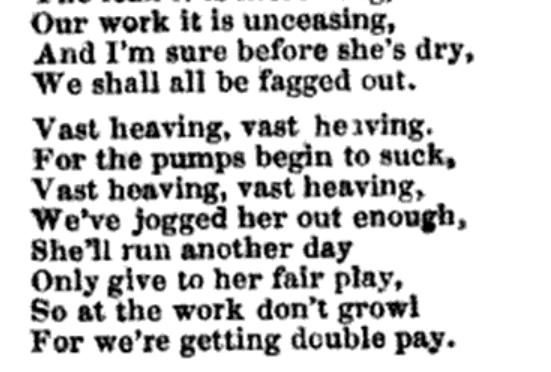

나폴레옹 시대 영국 전함의 전투 광경 - Lieutenant Hornblower 중에서 (8)
게시: 2019-04-01T06:30:00+09:00
사상자들이 끌려나가고 캡스턴 바에는 다시 수병들이 배치되었다.
"밀어라 !" 부스가 외쳤다. 철컹-철컹-철컹. 캡스턴은 점점 더 천천히 돌았다. 그러더니 결국 딱 멈췄고, 멈춤목이 장력을 받아 삐그덕 소리를 냈다.
"밀어라 ! 밀어 !"
철컹 ! 그리고는 아주 마지 못해 움직이듯 아주 오랜 간격 뒤에 다시 철컹 ! 그러더니 또 멈췄다. 힘을 쓰는 수병들의 팽팽한 등짝 위에 햇빛이 무자비하게 내리쬐었다. 굳은 살이 박힌 발로 갑판의 목판 틈 사이에 디딜 곳을 찾느라 더듬거리며 수병들은 캡스턴 바를 온 힘을 다해 밀었다. 그들이 힘을 쓰도록 내버려둔 채, 부시는 다시 하갑판으로 내려갔다. 그는 하갑판에서 수병들을 차출하여 상갑판으로 보내 캡스턴 바를 밀 인원을 3배로 늘렸다(to treble bank the capstan bars : 여기서 bank는 노젓는 노수들의 열을 뜻하는 것으로서, 인원을 열지어 배치하는 것을 뜻합니다 : 역주). 아직 많은 수병들이 가능한한 많은 대포를 고물 쪽으로 밀고 가느라 바삐 일을 하고 있었지만, 혼블로워는 그가 지휘를 맡은 함포들 쪽으로 돌아와 조준을 지휘하고 있었다. 부시는 닻줄에 발을 올려보았다. 그건 밧줄이라기보다는 마치 나무로 만든 돛가로대처럼 단단하고 팽팽했다. 그러는 중에 부시는 그의 구두 밑창을 통해 아주 살짝 뭔가 떨림을 느꼈다. 아주 살짝이었다. 캡스턴에 새로 배치된 수병들이 더 힘차게 캡스턴 바를 밀기 시작한 것이다. 톱니멈춤쇠 한 칸이 더 돌아가는 소리가 함체의 목재를 따라 반향으로 느껴졌다. 닻줄이 아주 약간 더 격하게 움찔하더니 다시 고체같은 뻣뻣함으로 굳어버렸다. 지금 이 순간 캡스턴에서는 150명의 수병들이 용을 쓰고 있었지만, 부시가 닻줄에 발을 대고 있는 동안 닻줄은 1/8 인치(즉 0.3cm)도 움직이지 않았다. 혼블로워의 함포 중 1문이 불을 뿜었고, 부시는 그 반동을 닻줄을 통해서 느낄 수 있었다. 햇치 통로를 통해서 스미스와 부스가 캡스턴에서 고함을 지르며 수병들을 독려하는 소리가 희미하게 들려왔다. 하지만 닻줄에서는 여전히 1인치의 움직임도 볼 수 없었다. 혼블로워가 다가오더니 모자에 손을 대며 경례를 했다.
"제가 함포를 발사할 때 혹시 움직임을 느끼셨습니까 ?" 그는 이 질문을 하면서 몸을 돌려 전함 중간에 위치한 어느 함포의 조장에게 손짓을 했다. 그 함포는 막 장전을 마치고 발사 위치로 밀려나가고 있는 중이었다. 손짓을 받은 함포 조장은 함포의 점화구에 화승간을 댔고, 함포가 불을 뿜으며 연기 속에서 반동으로 튀어나왔다. 닻줄에 올려놓은 부시의 발에 그 효과가 느껴졌다.
"삐걱거리는 정도 ? 아닌가 ? 맞아, 느꼈어." 부시에게 뭔가 영감이 떠올랐다. 그가 이제 물으려는 질문에 대해, 부시는 혼블로워가 무슨 대답을 하려는지 이미 알 수 있었다. "자네 지금 무슨 생각을 하고 있나 ?"
"제 함포로 일제 사격을 해볼 수 있습니다. 그러면 뻘에 흡착된 것이 떨어져 나갈지도 모릅니다, 부관님."
정말 그럴 수도 있었다. 지금은 리나운 호가 얹혀 있는 진흙뻘이 리나운 호를 꽉 쥐고 있는 형국이었다. 닻줄을 팽팽하게 당기고 있는 상황에서 리나운 호를 심하게 흔들어준다면 진흙뻘의 속박에서 벗어날 수 있을 수도 있었다.
"진짜, 그거 한번 시도해볼 가치가 있는 일 같군." 부시가 말했다.
"알겠습니다. 3분 안에 제 함포들을 장전시키겠습니다." 혼블로워는 자신의 포대를 향해 몸을 돌리고는 입 주변에 손을 확성기처럼 모아 소리를 질렀다. "포격 중지 ! 모두 포격 중지 !"
"캡스턴 쪽에도 내가 말을 해놓지." 부시가 말했다.
"알겠습니다." 혼블로워는 계속 해서 명령을 내렸다. "장전할 때 포탄은 2발을 넣어라. (Load and double shot your guns. : PS1 참조 : 역주) 뇌관 화약을 넣고 발사 위치로 밀어내."
그것이 당분간 부시가 들은 마지막 하갑판 상황이었고, 이후 그는 주갑판으로 올라가 일제 사격에 대해 스미스에 대해 이야기했다. 스미스는 그 이야기를 듣자마자 즉각 동의하며 고개를 끄덕였다.
"미는 거 멈춰 ! ('Vast heaving ! : PS2 참조 : 역주) " 스미스가 호통을 쳤고, 캡스턴 바에 매달렸던 땀투성이 수병들은 지친 몸에서 잠시 힘을 뺐다.
---------------

(2번이 장약, 1번이 포탄입니다. 1번의 포탄을 2개 쟁여놓으면 double shot이 되는 것입니다.)
PS1. 실제로 당시 저렇게 대포 하나에 대포알 2발을 넣어서 발사하는 경우가 종종 있었습니다. 이때 장약도 2배로 넣느냐가 궁금하실텐데, 장약도 2배로 넣을 경우 대포가 폭발해버릴 위험이 있으므로 그렇지는 않았습니다. 저렇게 같은 장약에 대포알만 2발씩 넣어서 쏘는 경우는 물론 상대가 매우 근접해 있을 때입니다. 그럴 경우 대포알이 굳이 멀리 날아가야 할 이유는 없었고, 당시 포탄처럼 폭발탄이 아니라 그냥 쇳덩어리 포탄인 경우 상대편 부대나 군함에 일단 맞추고 보는 것이 중요했으니까요.
여기서 혼블로워가 대포를 더블샷으로 장전하라고 명령하는 것에서 혼블로워가 무척 똑똑한 친구라는 것을 아실 수 있습니다. 대포가 발사될 때의 반동을 이용하여 좌초된 군함을 흔들어보려는 상황에서, 작용-반작용 법칙을 생각해보면 날아가는 포탄의 무게가 2배가 될 수록 대포의 반동도 심해질테니까요. 다만 장약이 2배가 아니므로 그만큼 느린 속도로 포탄들이 날아갈텐데, 1발이 고속으로 날아가는 것과 2발이 저속으로 날아가는 것은 결국 같은 양의 반동만 일으키지 않을까 하는 의문이 들 수 있습니다. 결론부터 말씀드리면 2발을 넣는 것이 그래도 의미가 있다고 봅니다. 당시 대포의 장약인 흑색화약은 요즘의 고성능 폭약에 비해 폭발 속도가 느렸으므로 상당량의 장약 폭발력이 대포를 미는데 사용되지 못하고 새어버렸습니다. 만약 대포알을 2발을 넣을 경우 그만큼 더 천천히 포탄이 발사될 것이고, 그만큼 대포 본체가 더 큰 반발력을 받았을 것입니다. 이 때문에, 당시 대포알을 2발씩 넣어 더블샷을 쏠 경우에는 장약을 오히려 약간 줄여서 장전하는 경우가 많았습니다. 1발짜리 장약을 그대로 쏠 경우 포신에 무리가 가서 대포가 폭발해버리는 수가 있었기 때문이었습니다.

PS2. "Vast heaving"이라고 하면 "광활한 밀기" 정도로 해석해서 "힘차게 밀어라!" 정도로 해석할 수도 있습니다. 그러나 그 뒤의 문장을 보면 이건 정반대로 멈추라는 뜻입니다. 왜 Vast heaving이 멈추라는 뜻으로 사용된 것일까요 ? 이것도 해양 용어의 특수성일까요 ? 실제로 이 "Vast heaving"이라는 구령은 범선에서 자주 쓰이던 명령이긴 합니다. 다만 이건 특수 용어는 아니고... 그냥 준말로서 "Avast heaving"에서 A가 빠진 것입니다. Avast란
"그만" 또는 "그쳐" 정도의 구령이거든요. 이 단어는 액센트가 뒤에 있기 때문에, 장교나 부사관이 있는 힘껏 소리를 지를 때 "(어)배스트" 라고 발음이 나와서 그냥 vast heaving으로 굳어버린 모양입니다. 육군에서도 "대대~ !" 라고 외칠 때, "Battalion (버)탈리언 ~ !" 이라고 하지 않고 그냥 "Talion 탈리언 ~ !" 이라고 외치는 모습이 Sharpe 시리즈에서 종종 묘사되곤 합니다.
Source : Arctic Miscellanies by James John Louis Donnet
https://en.wikipedia.org/wiki/Naval_artillery_in_the_Age_of_Sail
https://en.wikipedia.org/wiki/List_of_cannon_projectiles